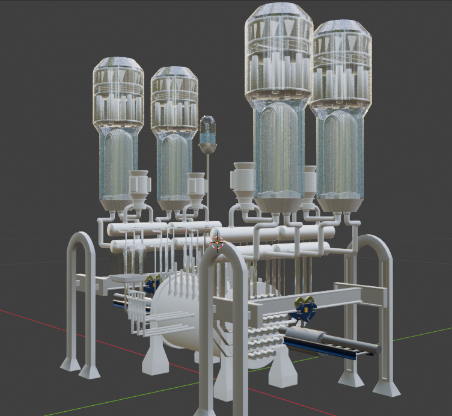
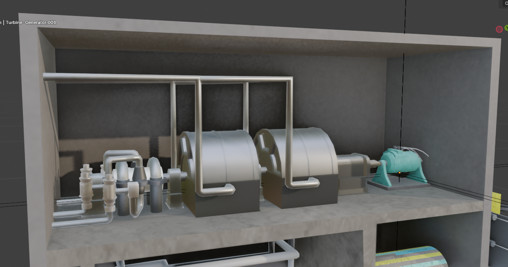
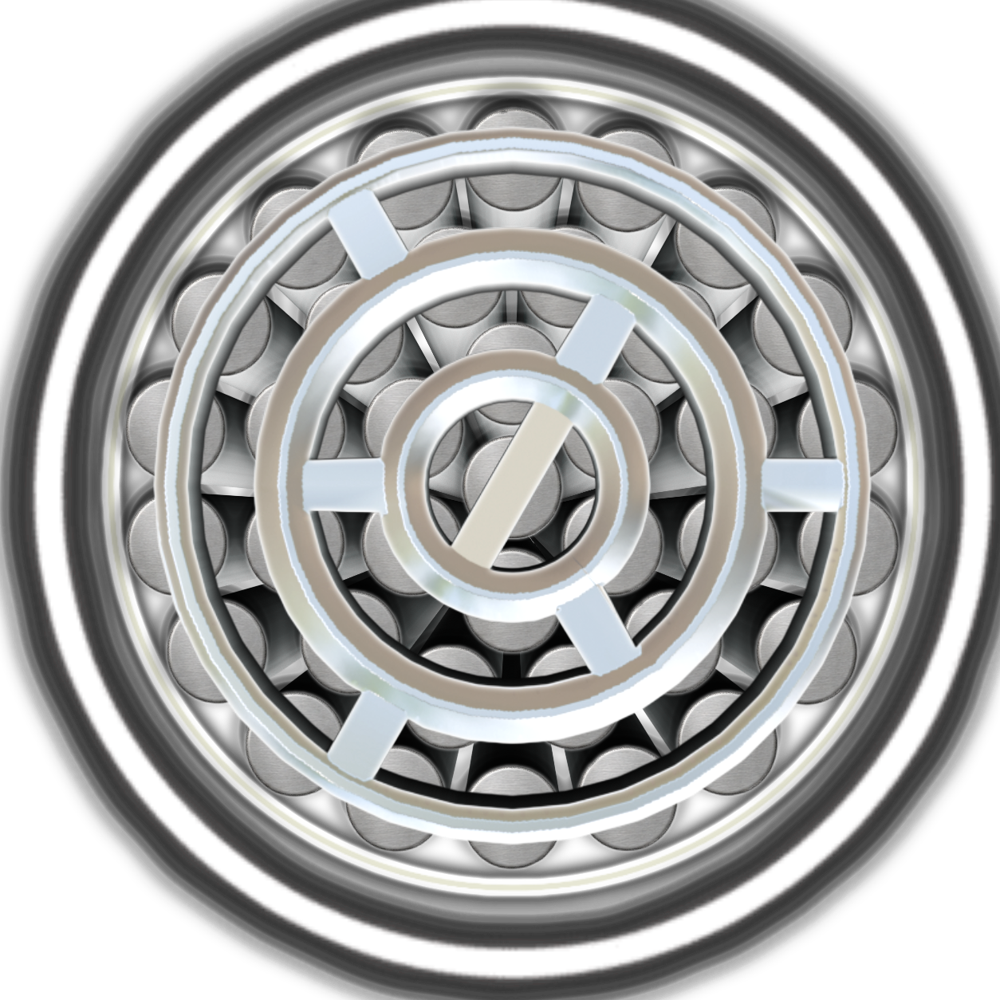
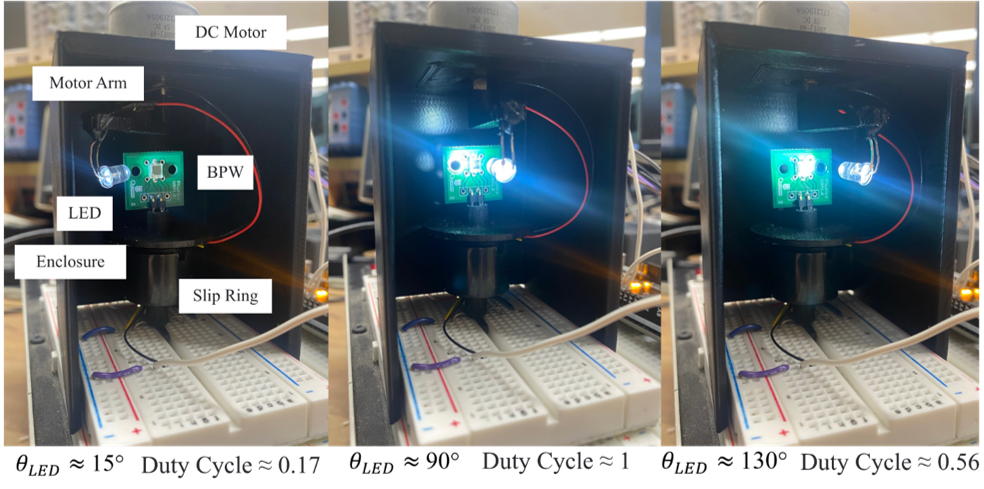
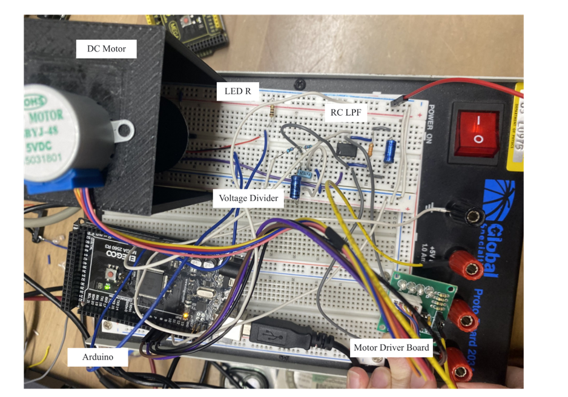

CANDU mechanical system
A larger mechanical assembly where I explored reactor-like vessels, pipe routing, support structures, and repeated industrial forms. I wanted the model to feel complex but still readable.
Hello, my name is Oneil. I am in my 3rd year of Engineering Physics at Smith Engineering, and I enjoy building things across both physical and digital spaces.
I am interested in mechanical systems, user experiences, and game mechanics. I am a Virtual Reality Design Specialist supervised by Francesco Ambrogi, Mechanical and Materials Engineering Professor at Queen’s, with FEBUS and the Engineering Teaching and Learning Team.
In my free time, I work as an independent game developer. I like creating 3D animations, low-poly 3D models, clean interfaces, and intuitive experiences. I use Blender and Unity to build, test, improve, and present my work.
This work was recently made and will continue getting further updates until nearing the end of August. It started at the beginning of May. All of these assets are extremely performance friendly and have a low polygon count.

A larger mechanical assembly where I explored reactor-like vessels, pipe routing, support structures, and repeated industrial forms. I wanted the model to feel complex but still readable.
A video showing the animation of the symmetric refueling and defueling of the CANDU reactor.

A cutaway-style mechanical room focused on layout, pipe paths, generator shapes, and industrial equipment. This piece was about making the space feel like a working energy system.
This animation is meant to show the inside of the turbine systems that exist in nuclear energy systems, specifically the CANDU reactor with 2 LPTs and 1 HPT. Turbines cannot actually get unsheathed like these do in this animation (hahaha), so this animation serves a visual and educational purpose.
This animation shows an exploded view of the pressure tubes that go into the calandria, containing the zirc-alloy tubes.

A reactor-inspired image made with Photoshop compositing. I built the visual around circular structure, repeated tubes, metallic surfaces, and a clean technical presentation.


A solar-tracking project built around a photodiode/light sensor circuit, LabVIEW control, Arduino PWM, and a 3D-printed mechanical setup. The goal was to track a light source and understand how positioning affects energy output.
More information soon!